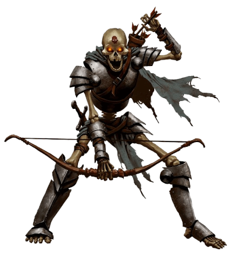

Você se afasta do corpo vil de Zanbar Bone, esperando que ele comece a se decompor. Porém, você escolheu errado! Ele tira a flecha de seu peito e esfrega os olhos, retirando o composto. Ele vê você e ri. Você está hipnotizado pelo seu poder e incapaz de se mexer. Ele caminha até você e toca seu rosto com seus dedos de esqueleto. Sua vida está sendo rapidamente sugada e logo você iniciará sua existência de morto-vivo a serviço de Zanbar Bone.
